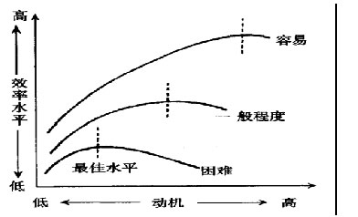

00:00
第四节 社会动机与社交情绪
第一单元 社会动机概述
一、社会动机定义
动机是引起、推动、维持与调节个体行为，使之趋向一定目标的心理过程或内在动力。由人的自然属性、自然需要引起的动机称为自然动机；由人的社会属性、社会需要引起的动机称为社会动机。
二、动机过程
人的某种需要从未满足状态转换到满足状态，然后产生新的需要，这一循环过程称为动机过程。 需要——心理紧张——动机——行动——目标——需要满足、紧张解除——新的需要
03:43
三、社会动机的功能
（一）激活功能
（二）指向功能
（三）维持与调节功能
四、动机强度与活动效率的关系
一般说来，动机强度与活动效率之间的关系大致呈倒U型曲线，即中等强度的动机，活动效率最高。动机强度过低或过高，均会导致活动效率下降。

动机强度、任务难度与活动效率的关系
10:12
第二单元 主要的社会动机
一、亲合动机
亲合是个体害怕孤独，希望与他人在一起，建立协作和友好联系的一种心理倾向。亲合即合群，是人际吸引的最低层次。
（一）亲合的起源 －－亲合起源于依恋
（二）亲合的作用
1.满足个体的某些社会性需要
2.获得信息
3.减轻心理压力
4.避免窘境
（三）影响亲合的因素
1.情境因素
群体在面临外界压力的情境中，会产生亲合的需要。压力越大，群体成员的亲合动机越强。
2.情绪因素（恐惧与焦虑）
恐惧是现实危险引起的情绪体验，恐惧情绪越强烈，亲合倾向越明显。焦虑是非现实危险引起的情绪体验，高焦虑者亲合倾向较低。
3.出生顺序
14:09
二、成就动机
成就动机是个体追求自认为重要的有价值的工作，并使之达到完善状态的动机。
（一）成就动机的重要性
1.个体的发展，有赖于一定水平的成就动机。高成就动机，会使个体敢冒风险，勇于进取，最终取得较高水平的成就。
2.经济的快速成长，社会的高度发展，人口、资源、技术等要素不可或缺，但全社会较高水平的成就动机也非常关键。
（二）抱负水平
抱负水平是个体从事某种实际工作前，对自己可能达到的成就目标的主观估计。
抱负水平与成就动机有密切联系，个体抱负水平的高低取决于其成就动机强弱。
（三）影响成就动机的因素
1.目标的吸引力
2.风险与成败的主观概率
3.个体施展才干的机会
（四）培养儿童成就动机应注意的问题
1.家庭教养方式。
2.强调成就、追求成就的社会氛围。
20:29
三、权力动机
权力动机是个体希望影响和控制他人的心理倾向。
温特（D.G.Winter，1973）认为存在两种权力动机：积极的权力动机和消极的权力动机。
引起权力动机的因素：社会控制的需求和对无能的恐惧。
四、侵犯行为
侵犯行为简称侵犯，也称攻击行为，是个体有意伤害他人的行动。侵犯是由侵犯动机引起的。
（一）侵犯的构成
侵犯是由伤害行为、侵犯动机及社会评价三方面的因素构成。
（二）侵犯的原因
1.本能论的解释
2.挫折—侵犯学说
多拉德（J.Dollard，1939）等人提出：“侵犯永远是挫折的一种后果”，“侵犯行为的发生，总是以挫折的存在为条件”。该学说的要点是：
（1）侵犯强度同目标受阻强度呈正比例关系。
（2）抑制侵犯的力量与该侵犯可能受到的预期惩罚强度呈正比例关系。
（3）如果挫折强度一定，预期惩罚越大，侵犯发生的可能性则越小；如果预期惩罚一定，则挫折越大，侵犯越可能发生。
3.社会学习论的观点
社会学习论认为侵犯行为是习得的。
32:23
（三）侵犯的影响因素
1.情绪唤起水平
2.道德发展水平
3.自我控制能力
4.社会角色与群体
5.大众传媒的影响
6.去个性化
五、利他行为
利他行为是个体有益于他人、公众和社会，不期待回报的行为。
（一）利他行为的性质
1.利他行为是一种亲社会行为。亲社会行为泛指一切符合社会期待的有益于他人的行为。
2.利他是一种以人为对象的亲社会行为。
3.利他行为是由利他动机引起的，其特征是以完全有利于他人为目标。
（二）利他的原因
1.社会生物学的观点
2.社会规范论的观点：
交互性规范与社会责任规范。
39:49
（三）利他行为的影响因素
1.外部因素
（1）自然环境
（2）社会情境
他人在场对利他行为往往有负面影响，在场人数越多，利他越少，独自一人时个体利他的可能性反而增加。但也有研究表明，如果情境中出现助人行为的榜样，就会产生示范效应，增加人们的利他行为。
（3）时间压力
（4）利他的对象的特点
具有以下特点的人容易被帮助和救援：与利他者相似的人（特别是态度与价值观相似）、未伤害过利他者的人以及有吸引力的人。
2.利他者的心理特征
（1）心境
（2）内疚
（3）人格
（4）利他技能